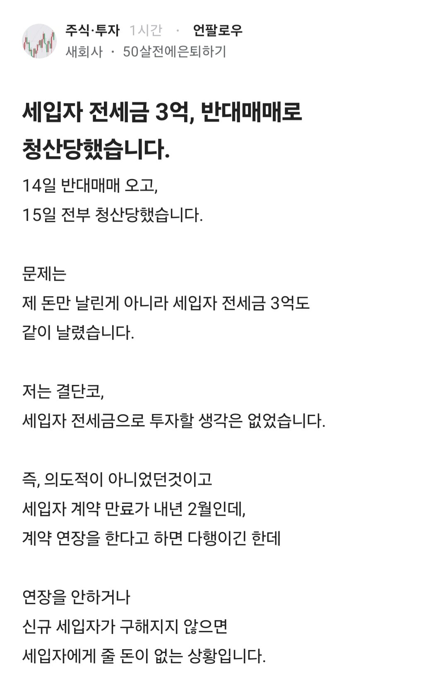
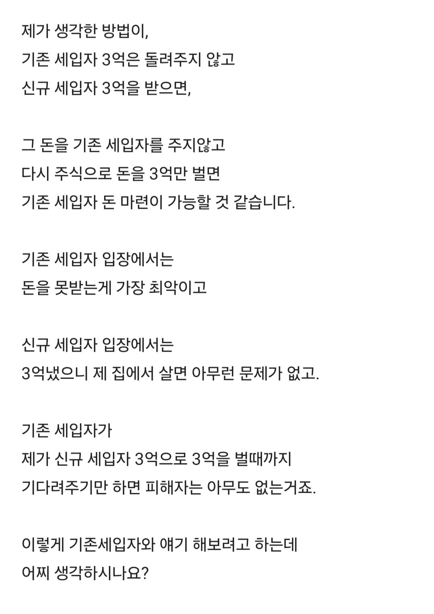
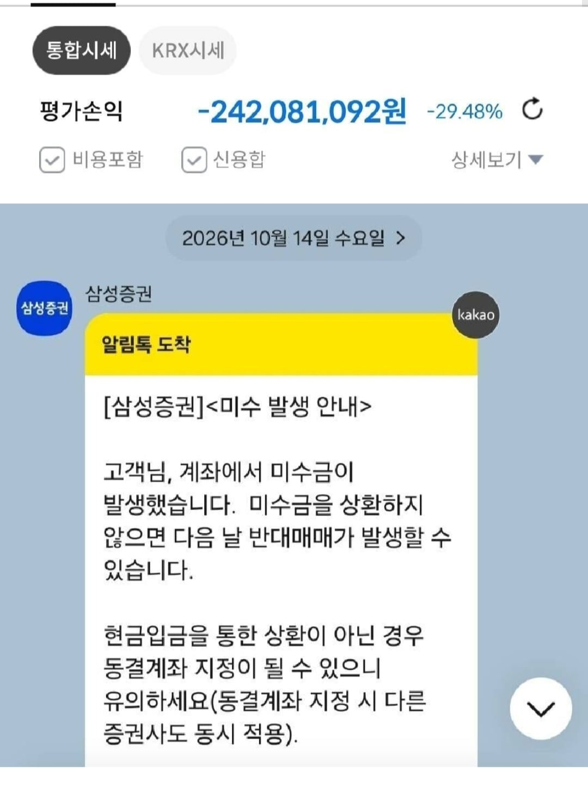
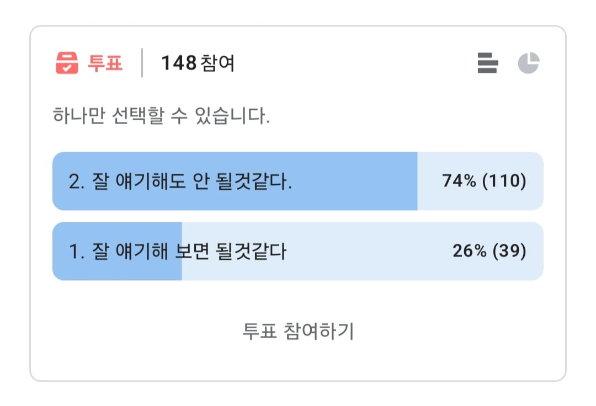
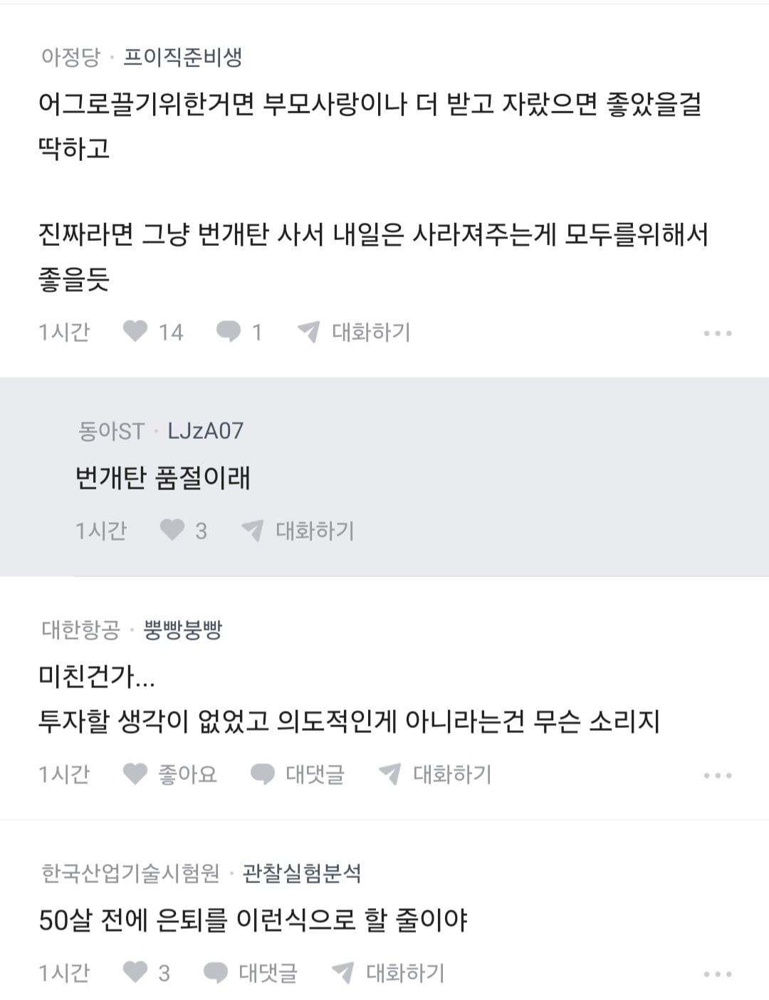
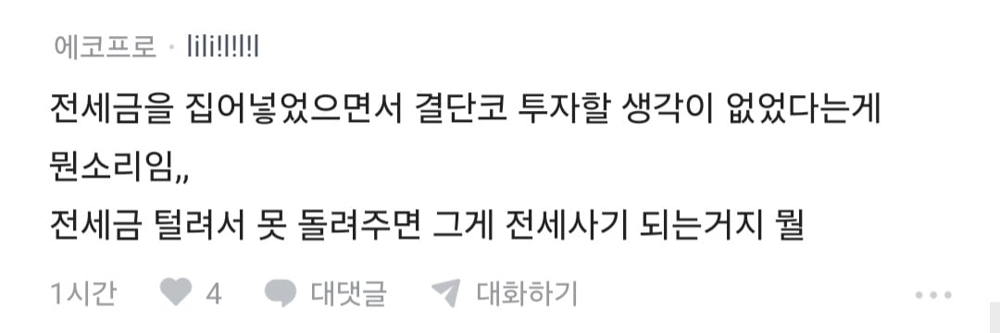
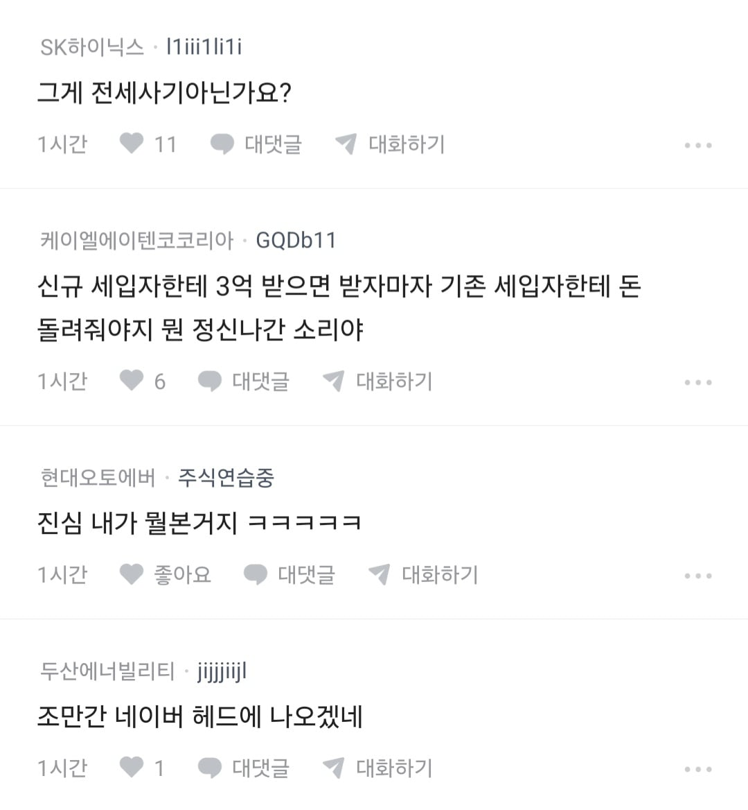

집팔아야지 ㅋㅋㅋ 병신
2 잘얘기하면될것같다. <- 이게 26% 가 있다는 것이 가장 놀랍다. 아마 글 이해 자체를 못한 것 같은데? ㅋㅋㅋㅋㅋ 그럼 기존 세입자는 길바닥에서 돈벌때까지 살아야한다는 건데 그게 이해가 필요한 부분인가? ㅋㅋㅋㅋㅋㅋㅋ
진짜로 저거 투표한 사람은 그냥 주인 더 망해봐라로 찍은거 아닐까요
설마 저런 생각을 가진 사람이 26퍼나 될리가 없잖음
저게 진심으로 그렇게 생각해서 찍은거겠냐 ㅋㅋ
집명의 이전시켜라 70퍼할인해서
ㅈㄴ쉽게생각하네 ㅋㅋㅋ 기존 세입자 앞에서 똑같이 말해봐
그와중에 새 피해자 모집해서 도박하겠다는 훌륭한 마인드보소
대충 사고방식이 우리와는 다릅니다 콘
저 지능에 집을 팔아서 주식하는 생각은 왜안하지 ㅋㅋ
뭔 개소리지 잃으면 6억이 빚인데?
전세사기가 이런 느낌이구나...
와.. 난 세입자 보증금 파킹 ETF에 넣어놓고 따박따박 월 5%받아가는데 개꿀인데 ㄹㅇㅋㅋ이걸 왜 안함
와 월5% 전세 2년주면 전세금 넘게뽑네 ㅋㅋㅋㅋ
그러게 찬성매매 했어야지
서울대임?
찬성매수
주작 같은 게, 원래 전세 임대인은 세입자에게 돌려 줄 현금이 없어
주택 매입 비용에서 모자른 돈을 은행에서 빌리는 대신 전세를 주는 건데
주택 매입 자금이 모자라지 않았다면 월세를 주지 왜 전세를 줘
그리고 다른 데 투자할 목적으로 전세를 주는 건 충분히 있을 수 있는 일이고, 저게 사실이면 이런 케이스인 거 같은데, 그 돈을 다 잃었다 한들, 그냥 일반적인 전세의 상태랑 같아진 거임
전혀 안 같음
전세금 가져다가 다른 건물 사고 그걸로 또 임대돌리고 하면
막말로 돈없으면 건물을 팔면 전세금이 나옴
지금 "현금"이 없는게 일반적인거지 "자본" 자체가 없는건 일반적인게 아님
돈 준거 어딨어?
저기 건물샀어 그래서 지금 현금이 없어
vs
돈 준거 어딨어?
없어
이게 어캐 같음
그 담보가 세입자가 들어가 있는 집인 경우가 일반적인 거라니까?
다른 재산이 있는 집주인들도 있겠고, 집 팔아도 전세 보증금 못내줄 경우에는 다른 재산도 처분해야겠지만, 상당수의 전세 임대인은 규모가 큰 재산이 그 집 하나임.
지돈도 넣고 전세금3억도 같이 넣은거임 여유자금있는상황이면 반대매매 청산안당했겟지
어떻게 줄돈있는데 지금 당장 못준다랑
줄돈이 없어서 못준다랑 똑같다고 생각하지?
담보에 세입자 들어가있으면 그 세입자한테는 공짜로 줌?
그 세입자한테 돈 받아서 이 세입자한테 주고 이 집에 세입자 구하면 다시 돈받고 해서 여기서 받아서 저기주고 하는식으로 돌리는거라 당장 현금이 없는거지 결국돈으누어디선가 나옴
하다못해 가진 건물 담보로 단기대출 받아서 돈 주고 세입자 들어오면 그돈으로 갚아도 됨
근데 주식투자해서 0원이면 어캐 커버하냐고 이게 대체 어떻게 같음?
세입자가 계약 연장 안하면 줄 돈이 없다에서 끝났지.
다른 데 투자는 알바 아닌데 계약 갱신 안될 시 계약 만기 때까지는 돈을 마련해야 할 거 아녀.
걍 요점을 이상하게 짚는 거 같은데 어떤 전세 임대인이 계약 만기가 되었을 때에도 돌려줄 전세금이 없는 게 당연한 거냐. 계약 전까지는 없어도 계약이 끝날 때는 다른 세입자를 구해서 전세금을 받던 돌려줄 현금을 마련해 와야 하는데 쟨 그걸 못한다는 거잖아.
도박마
전세금줄거없으면 집팔아서줘야지뭐
집 팔아서 주면 되지 뭐가 문제야
님 천재임?
집은 제껀데 왜 팔아야 하나여?
읽다가 그래 폰지사기 정도네 하고 내릴려고했는데 신규 세입자돈도 투자하겠다는 초식보고 이마를 탁 침
누가 입주하리도 전에 전세금을 다줘??
대단하구만 전세사기범(예정) 친구!
애초에 원래 세입자는 돈안받으면 짐을 안빼는거고
돈주는 세입자는 현장에서 돈주고 문따고 들어가는거까지 같이 하는건데
무슨수로 돈을 양쪽에서 받아 ㅋㅋㅋㅋ
돈줬는데 문안따주고 튀려는 순간 현행범이야 ㅋㅋㅋ계좌동결되고 ㅋㅋ
집 팔아서 줘야지ㅋㅋ